イタリアでワイン巡り

ワイン生産量が、世界第一位を誇るイタリア。地域ごとで異なるブドウの品種や醸造方法により、多種多様なワインの味を楽しむことが出来ます。 当サイトでは、実際に現地を訪れたスタッフが考案した、厳選されたワインツアーをご紹介しております。魚介やチーズとの相性抜群なイタリアンワインの味を、イタリアののどかな田園風景とともに、心ゆくまでお楽しみ下さいませ。
お申込みはこちら

ワイン生産量が、世界第一位を誇るイタリア。地域ごとで異なるブドウの品種や醸造方法により、多種多様なワインの味を楽しむことが出来ます。 当サイトでは、実際に現地を訪れたスタッフが考案した、厳選されたワインツアーをご紹介しております。魚介やチーズとの相性抜群なイタリアンワインの味を、イタリアののどかな田園風景とともに、心ゆくまでお楽しみ下さいませ。
お申込みはこちら
名古屋栄駅が最寄り駅です